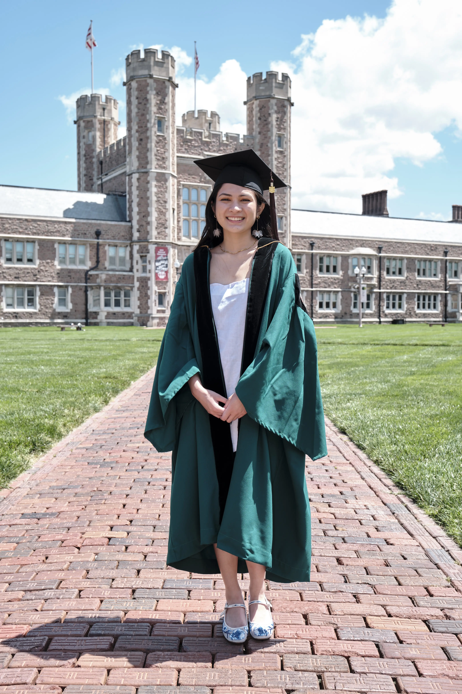

From motion graphics to editorial design, I love exploring and learning new ways of telling stories. I enjoy the production side of the creative process the most, along with the physicality and tactility of design.
I currently work at Dell Technologies where I support the Social and Shared Services team as a Creative Content Lead for organic social as part of the Marketing Development Program, a two-year rotational program. Previously, I was on the Brand Identity and Governance team, the Server, Networking, and Global Industries team, and the Early in Career team. During my previous rotations, I conducted brand reviews, aided content creation and curation, and oversaw program and event operations.
In my freetime, you can find me dueling comicbook heroes on Marvel Rivals 🦸♀️, planning out my next sewing project 🧵, or taking a local art class 🎨.
I’m open to freelance, part-time, and flexible design opportunities or to connect about anything at all!